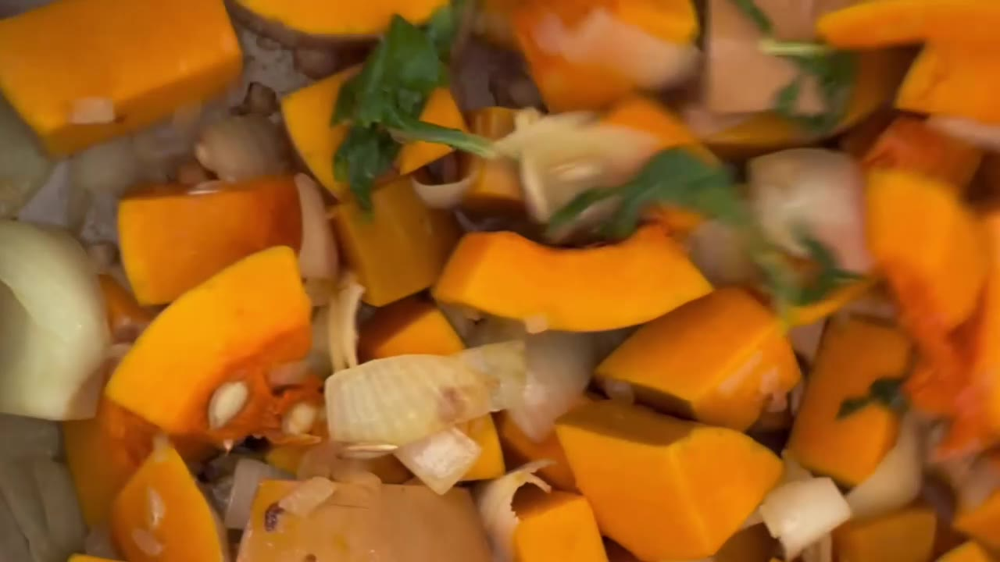
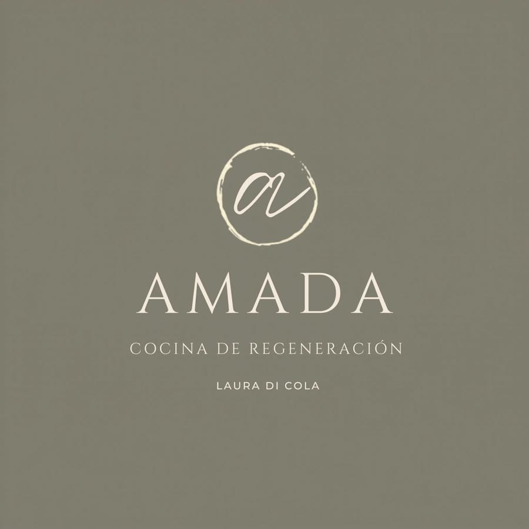
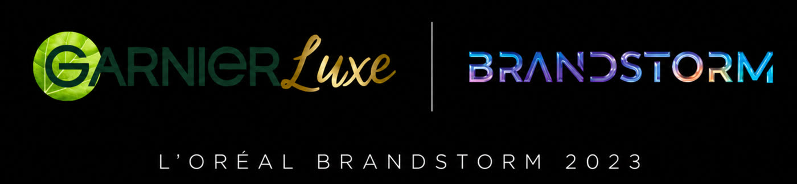
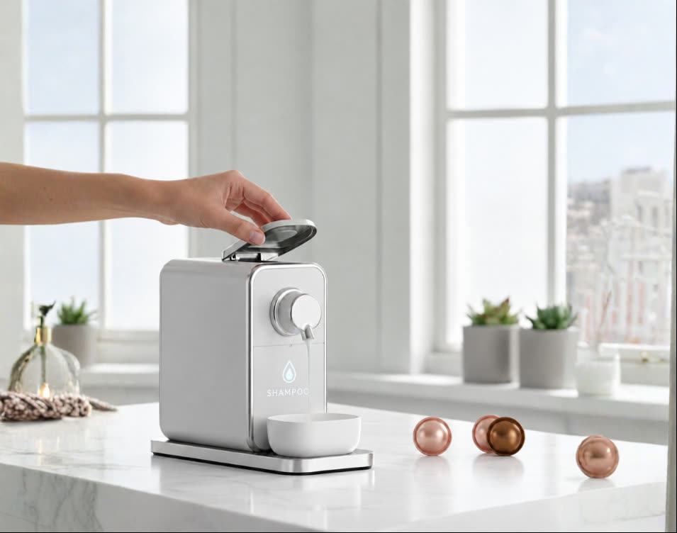
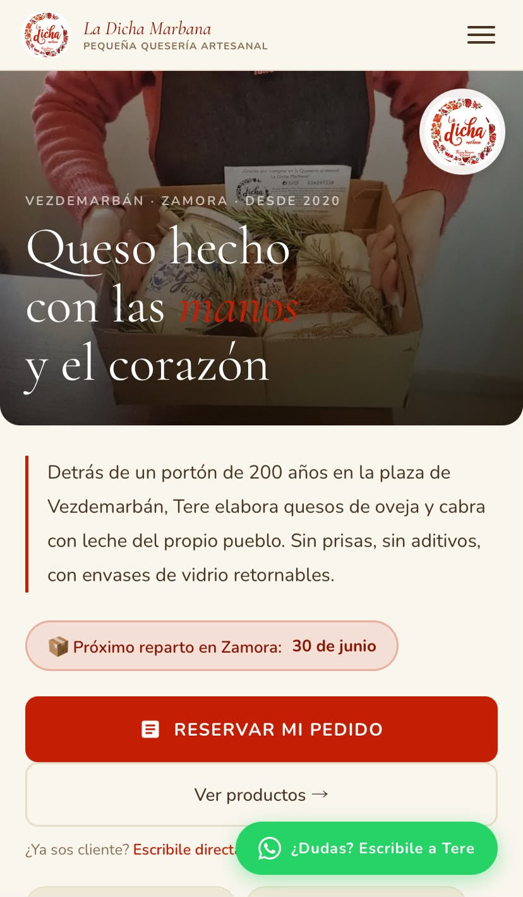
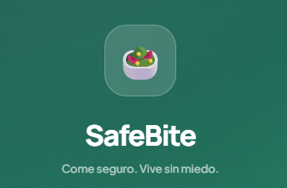
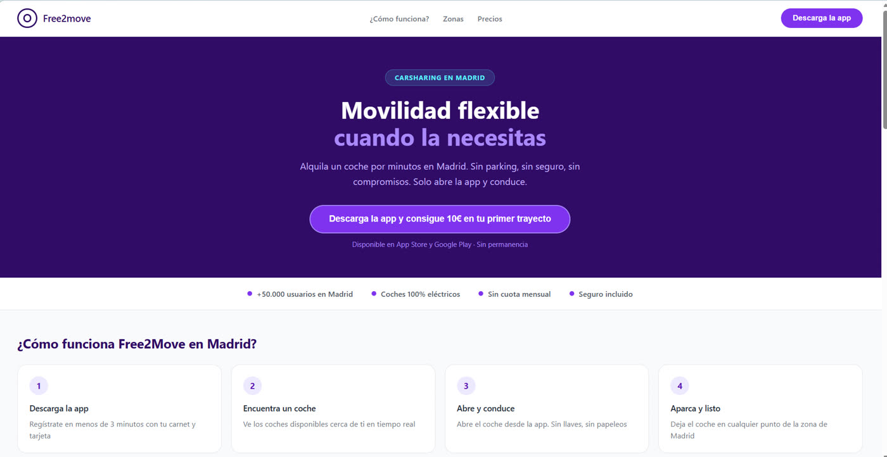
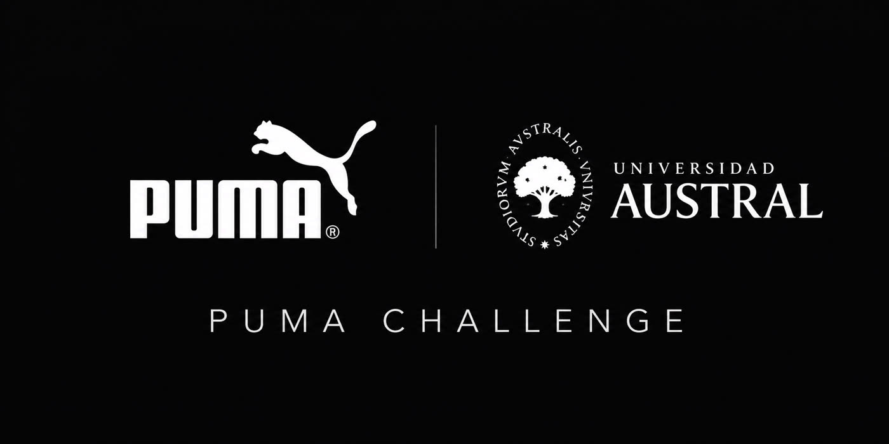
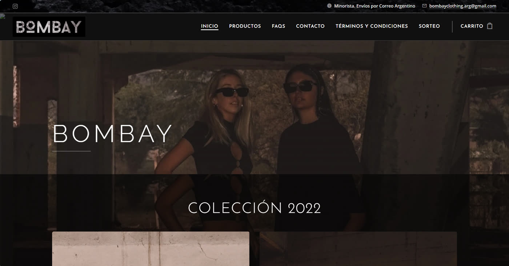

Tendencia
Dar valor sin vender
Noté que Instagram recomendaba mucho a los creadores que contaban su propuesta de valor sin venderte nada, ofreciendo algo gratis. En el caso de Laura, eso eran sus recetas y el menú que publicaba todas las semanas.
Cápsula de Sin Desperdicio para Chango Más · fragmento sin sonido
Malena Gonzales Chaves Portfolio
Storytelling de marca, contenido digital y trabajo con creadores
Trabajé en marketing de marca en L'Oréal · Matrix y en comunicación regional para Natura & Avon. También desarrollé contenido audiovisual y gestioné comunidades para Sin Desperdicio, y sumé experiencia en análisis de performance digital en PROEDUCA/UNIR. Combino comunicación de marca, criterio editorial y lectura de datos.
Portfolio Trabajo seleccionado
Una pieza audiovisual en la que participé y dos propuestas de social media del máster. Cada una se puede ver completa acá, sin salir de la página.

Focus on
Contenido, comunidad y cocina sin desperdicio, con Laura Di Cola.
Junio 2020 a 2023
Contenido y social media
Trabajé junto a Laura Di Cola en Sin Desperdicio. Mi trabajo estaba en el cruce entre lo que pasaba en redes, la cocina de Laura y las oportunidades de marca: detectar formatos, convertirlos en ideas, editarlos y acompañar a la comunidad.
Identificaba tendencias y formatos emergentes con potencial de alcance orgánico y los traducía en ideas de contenido para el Instagram de Laura.
Editaba videos breves y dinámicos en CapCut sobre cocina sin desperdicio.
Armaba presentaciones con propuestas de colaboración entre la marca personal de Laura y marcas externas.
Gestionaba comunidades en redes y newsletters.
Dos cápsulas de recetas para Chango Más, sopa de zapallo y cáscaras de banana, emitidas en las pantallas de sus supermercados. En la de sopa de zapallo hice el guion, la filmación y la edición.
Revisé y corregí textos del libro Sin Desperdicio.
Estrategias de contenido con Laura
Tendencia
Noté que Instagram recomendaba mucho a los creadores que contaban su propuesta de valor sin venderte nada, ofreciendo algo gratis. En el caso de Laura, eso eran sus recetas y el menú que publicaba todas las semanas.
Archivo
Busqué los videos viejos de Laura que mejor habían funcionado y los volvimos a hacer con una filmación más moderna y en versiones más cortas, actualizando la estética y la parte audiovisual.
Ideación
Pensamos con Laura qué recetas sin desperdicio podían ser las más fáciles e innovadoras: merengue vegano con el agua de los garbanzos (aquafaba), polvo de palta con el carozo rallado o sirope de papa con el agua de cocción, en lugar del jarabe de maple.
Formato
Exploré el formato de preparar tres comidas con un mismo ingrediente principal. De ahí salió una serie corta de videos de cocina sin desperdicio.

En curso · 2026
Una nueva marca de catering premium que estoy ayudando a construir con Laura.
Portfolio Recorrido profesional
Marketing de marca, comunicación regional y análisis digital. Tocá cada etapa para ver el detalle.
Planificación de piezas de social selling y coordinación integral de campañas regionales de Perfumería y Maquillaje en LATAM, incluyendo seguimiento y reportes.
Newsletter audiovisual interno · mensual
Coordiné los aportes de las áreas y revisé textos, cápsulas audiovisuales y diseño final. La agencia se encargaba de la producción.
Hito · iniciativa propiaImpulsé un brandsite regional en Google Sites para centralizar información y materiales de siete mercados.
Marketing de Matrix, dentro de la División de Productos Profesionales de L'Oréal, con participación en lanzamientos, renovaciones de producto y coordinación transversal con las áreas comerciales, de comunicación y e-commerce.
Influencer marketing · Coordinación operativa
Participé en la coordinación de acciones con influencers: revisé briefs, coordiné envíos de producto a través de una agencia intermediaria y realicé el seguimiento de sus reportes. La estrategia evolucionó de perfiles lifestyle a un squad B2B de cinco estilistas profesionales, bajo el liderazgo de mi manager y la agencia.
HitoFinalista de L'Oréal Brandstorm 2023 con GarnierLuxe, una propuesta de beauty-tech basada en IA y personalización capilar.
Portfolio Más proyectos
Un proyecto, dos etapasGarnierLuxe 2023 → HÄBIT 2026

Propuesta de beauty-tech basada en IA y personalización capilar: app de diagnóstico y prototipo conectado. Finalista de L'Oréal Brandstorm 2023.

A partir del proyecto de Brandstorm, desarrollé una nueva propuesta con más profundidad estratégica, investigación y desarrollo visual.

Prototipo web mobile-first desarrollado con Claude: arquitectura de contenidos, propuesta de marca y experiencia de reserva.

Propuesta de app para gestionar alergias e intolerancias: escaneo inteligente, perfil personalizado y restaurantes verificados.

Estrategia de growth para el carsharing en Madrid: propuesta de captación, landing de conversión y plan de crecimiento.

Propuesta de lanzamiento de PUMA NITRO con foco en segmentación y buyer personas.

Marca desde cero: web, redes, contenidos, stock, precios y ventas.
Portfolio Habilidades y herramientas
Cada habilidad, con el lugar donde la puse en práctica.
CapCut · Laura Di Cola
Laura Di Cola · The Innova Room · Bombay clothing
Laura Di Cola · BitrixKids, en el máster: concepto, pilares y calendario de contenidos
Natura & Avon · piezas de social selling y newsletter audiovisual
L'Oréal · Matrix, en un rol operativo · Kenzo, en el máster: investigación de creadores con HypeAuditor
L'Oréal · Matrix · Natura & Avon
PROEDUCA · UNIR
L'Oréal · Matrix · Natura & Avon
Herramientas que uso
CapCut · Canva · Excel · Google Workspace · Microsoft 365 · SAP · Nodum · Claude · ChatGPT
Dashboards y canales analizados
Tableau · Power BI · Looker Studio, para el seguimiento del rendimiento en Google, LinkedIn, Display, Meta y TikTok (PROEDUCA · UNIR)
Investigación en el máster
Not Just Analytics · HypeAuditor · Semrush · Similarweb · PageSpeed Insights
Posgrado
Universidad Villanueva, España · 2025 a 2026
Grado
Universidad Austral, Argentina
Idiomas
Certificate of Proficiency in English (CPE), Cambridge
Portfolio Contacto
CABA, Argentina. Busco roles de contenido, social media y marketing de marca, donde la creatividad conviva con la lectura de datos.